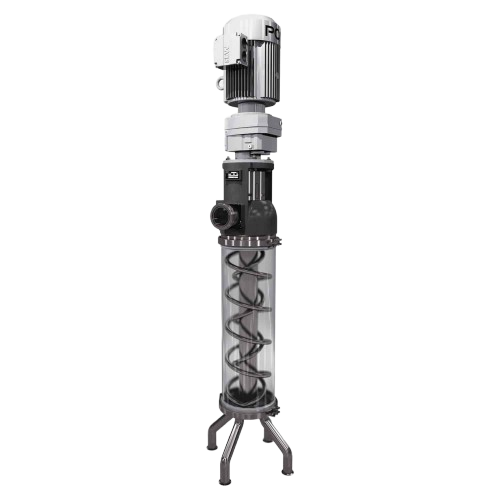
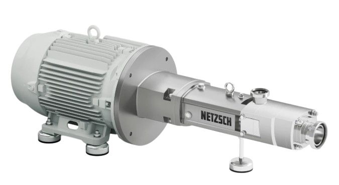
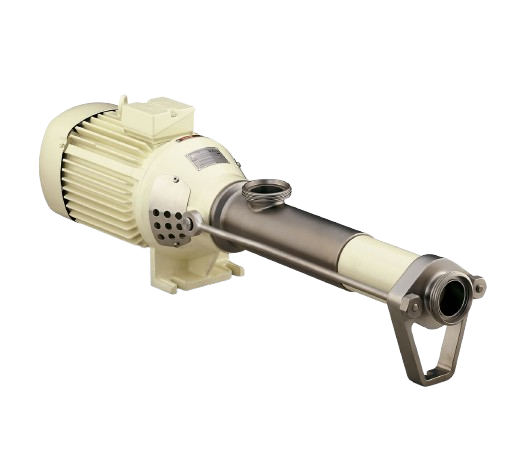

Process panel
Painel de informações de misturadores e capacidades de bombas. Escolha a ferramenta que você precisa.

Calcula o tempo de residência efetivo do misturador a partir do volume interno e da vazão de linha.
Abrir calculadora
Calcula a vazão de fruta necessária a partir da bomba e da máquina, e verifica se está dentro da capacidade da bomba.
Abrir calculadora
A partir dos dados atuais de campo (% fruta, Hz, L/h e rpm), calcula-se Hz, vazão e rpm para qualquer % de fruta desejada.
Abrir calculadora